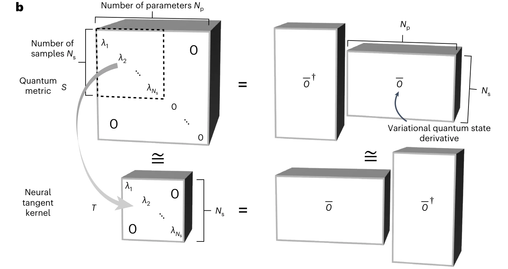

Nature Physics 20, 1476–1481 (2024)
Empowering deep neural quantum states through efficient optimization
Computing the ground state of interacting quantum matter is a long-standing challenge, especially for complex two-dimensional systems. Recent developments have highlighted the potential of neural quantum states to solve the quantum many-body problem by encoding the many-body wavefunction into artificial neural networks. However, this method has faced the critical limitation that existing optimization algorithms are not suitable for training modern large-scale deep network architectures. Here, we introduce a minimum-step stochastic-reconfiguration optimization algorithm, which allows us to train deep neural quantum states with up to 106 parameters. We demonstrate our method for paradigmatic frustrated spin-1/2 models on square and triangular lattices, for which our trained deep networks approach machine precision and yield improved variational energies compared to existing results. Equipped with our optimization algorithm, we find numerical evidence for gapless quantum-spin-liquid phases in the considered models, an open question to date.
